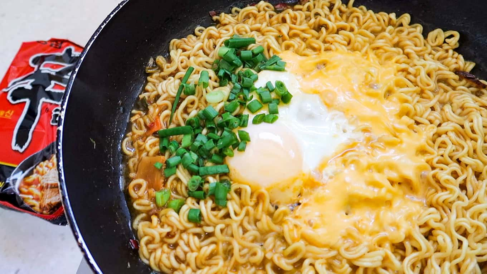

Home
Ramen noodle recipe

Korean Ramen recipe
A buddy of mine told me this was a thing and I didn't believe him until I looked it up
Try some cheesey ramen if you want. Or don't
Ingredients
- 1 Package of Shin Ramen
- 1 Whole egg
- 1 slice american cheese
- Few handfulls of chopped green onion
- 1.25 cups water
Directions
- Place in 1.25 cups of water into a frying pan.
- Bring it up to a boil.
- Once the water is boiling, add in the dried ramen noodles.
- Then, add in the dried veggies packet.
- Next, add-in only ½ the Spicy Seasoning Packet
- Let the noodles boil until it starts to loosen. Use your chopsticks to loosen the noodles. Then create a small circle in the middle of the pan.
- Drop-in an egg into the middle of the pan.
- Place lid on. Reduce heat to a LOW. Let it cook for 1 minute
- After 1 minute, lift the lid. Place 1 slice of American Cheese and add-on the chopped green onions.
- Take it off the heat. Place it on the table and eat